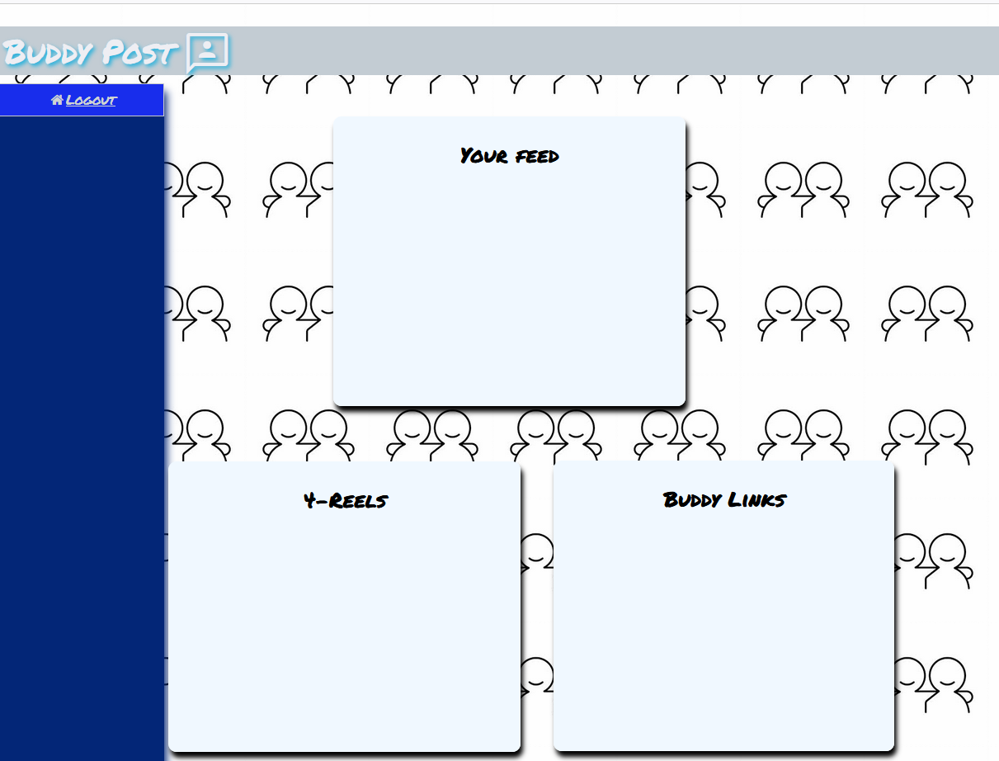
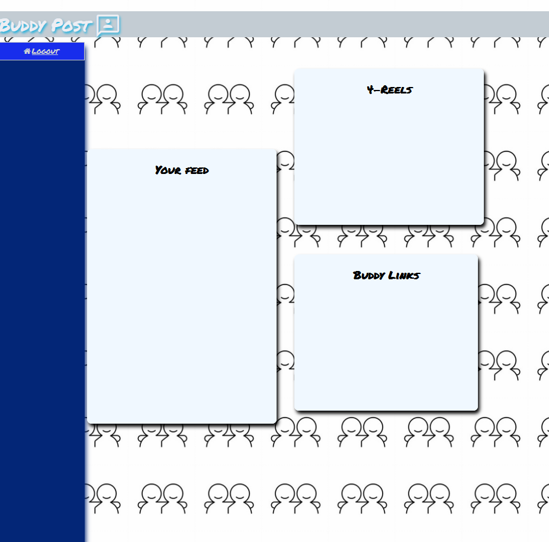

Welcome to BuddyPost! where you can be you! Here at buddy post we want you "the user"
to be able to choose want content you want to see on your profile. Also, be able to custiomize
your profile and what content you want on your Island tabs.
Here are some example pages you can choose to have on your profile to fit what you want
just scroll and see!
Profile Image 1
Profile Image 2
 